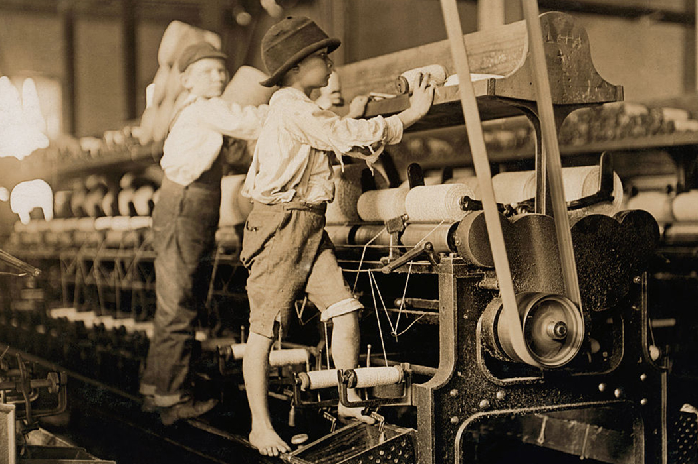
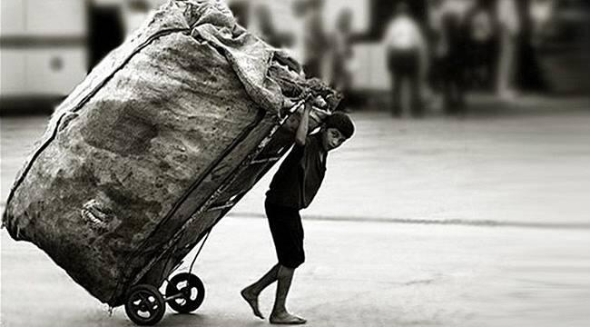

The modern history of child labor indicates that the transatlantic slave trade–which lasted three centuries beginning in 1562–was one of the earliest origins of the practice. Industrial revolutions beginning around 1750 in Europe, as well as in the U.S. following the Civil War, also forced children into dangerous work.
During the industrial revolution, children were employed by factories and plantation owners and were often forced to crawl inside of heavy machinery in order to fix it, working 12 to 18-hour days for little to no pay. Factory owners would justify their actions by drawing attention to the fact that they provided many the children with food, shelter and clothing, which were often “far below par.”
For hundreds of years, children have been made to work in hazardous and demeaning conditions that have robbed them of their childhood. Since then, many humanitarian efforts were launched with the goal of ending child labor.
In 1904, the National Child Labor Committee (NCLC) was founded in the United States with the mission of promoting the “rights, awareness, dignity, well being and education of children and youth as they relate to work and working.” As part of their investigative effort, the NCLC hired a photographer named Lewis Hine. Hine spent much of the next two decades photographing the working conditions of children in America.
Hine is just one of many early advocates for children including Grace Abbott and Jane Addams, who all worked toward the goal of ending child labor. While their goal may not have been accomplished quite yet, progress is happening rapidly.
As of 2012, the ILO states that there are around 5.5 million children working in slavery. These children are and have historically been used for the profit of others. They have been threatened with violence, exploited in illicit activities and forced to work in unsafe and uncomfortable conditions. Areas of child slavery today include sex trafficking, factory and construction, agriculture, mining and even armed conflict.
But slavery is only a fraction of the child labor problem. There are an estimated 168 million child laborers between the ages of five and 17, the majority (58 percent) of whom are employed in the agriculture industry.
Child labor is most prevalent in developing countries: the Asia/Pacific region employs around 78 million children, and Sub-Saharan Africa is home to 59 million child laborers.
While there are still children working, that number has decreased from 16 percent of working children in the world in 2004 to 13.9 percent in 2014. The reduction in hazardous labor has been even steeper, decreasing from 171 million in 2000 to 85 million in 2014.
The decrease in child labor is no accident. The ILO has been fighting to raise awareness of the history of child labor and enforce legislation that would define child labor and eliminate it. ILO Convention No. 138 establishes a minimum age to begin labor, coinciding with a country’s age for completion of compulsory schooling.
For most countries, the age is 15, with some exceptions for 14-year-olds doing light work. Convention No. 182 of 1999 created the goal of eliminating child labor entirely through the adoption and enforcement of legislature combating the issue
As more countries have adopted these conventions, we have seen child labor decrease. Goal number eight of the ILO’s 2030 Development Agenda is aimed at decent work and economic growth. Included is the goal to end child labor by the year 2025.
Child labor will only end when everyone is aware of its existence and makes a decision to fight against it, a decision that is often made through being informed of the longstanding history of child labor.